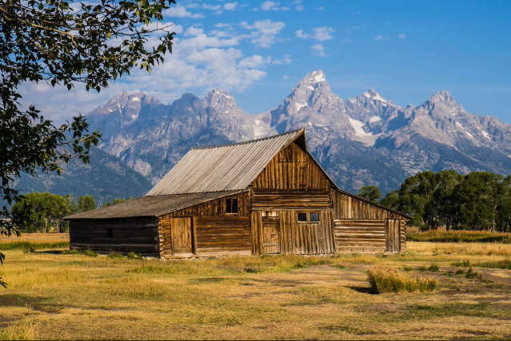

Guide to the Grand Teton

Stuff to do in the tetons
- Hike to Inspiration Point: Take the shuttle boat across Jenny Lake and hike up to this iconic overlook for a stunning view of the lake and the valley.
- Drive the 42-Mile Scenic Loop: This is the best way to see the major landmarks, including Mormon Row (the famous barns) and Snake River Overlook.
- Wildlife Spotting at Moose-Wilson Road: This is a prime spot to see moose, bears, and elk, especially in the early morning or at dusk.
- Visit Schwabacher Landing: Perfect for photographers; the calm water of the Snake River creates a mirror-like reflection of the Tetons.
Wildife at Grand Tetons
- Moose
- Grizzly & Black Bears
- Elk
- Bison
- Full list of Grand Teton Wildlife
I enjoy Grand Teton National Park because of its sheer, dramatic verticality. Unlike many mountain ranges that are shielded by foothills, the Tetons rise abruptly from the valley floor of Jackson Hole, creating a jagged granite skyline that feels both imposing and accessible. It captures the spirit of the American West, balancing world-class alpine adventure with quiet, reflective landscapes that stay with you long after you leave.